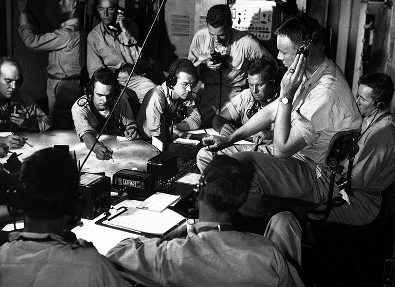
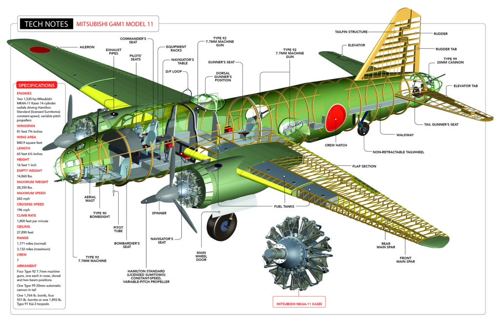
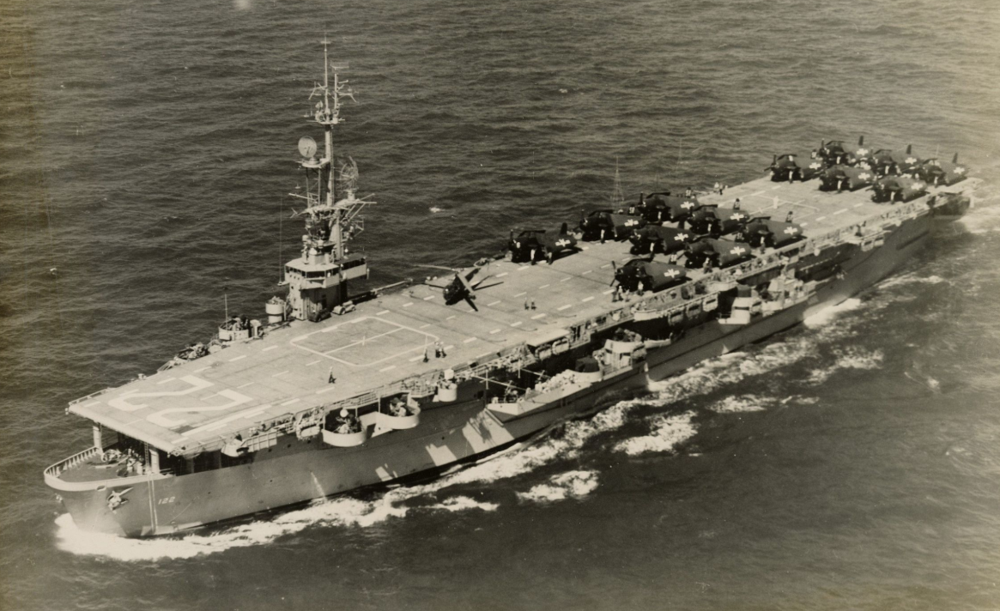
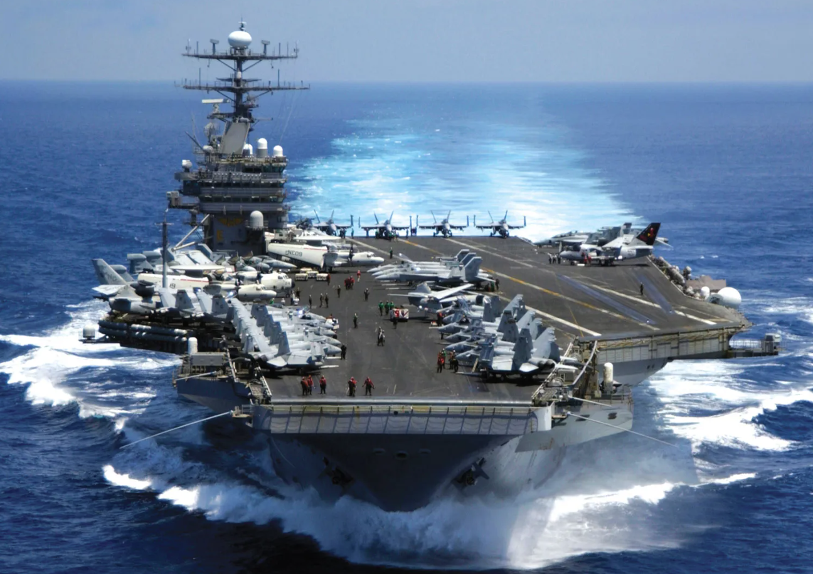
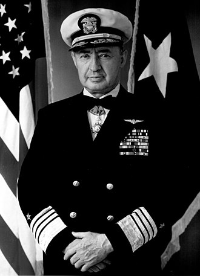

WW2 항모에서의 야간 작전 이야기 (1) - 밤에 가면 되지!
게시: 2025-02-06T06:30:51+09:00
<일본해군은 당근을 먹는다?> 1943년 중반 이후 cavity magnetron을 이용한 SM radar까지 도입되면서 미해군 항모전단의 대공 방어 태세는 더욱 공고해짐. 어지간한 공습은 한참 전부터 미리 파악이 가능했고, SM 레이더는 내습하는 적편대의 대수와 함께 이들이 몇 단계 고도로 나누어 한꺼번에 몰려오는 것까지도 모조리 탐지 가능했음. 덕분에 어지간해서는 장비에 만족할 줄을 몰랐던 함장들도 보고서에 SM radar를 이용한 전투기 관제는 매우 효율적이라고 다들 적었을 정도.

(이 사진은 Essex급 정규항모로 새로 건조된 USS Lexington (CV-16)의 CIC의 높은 의자에 앉은 Fighter Director Officer Allan F. Fleming 중령의 모습. 대략 1943년 11월 Gilbert 제도 (키리바티 제도) 공습 때의 사진. 플레밍 중령은 당시 미해군내에서 가장 뛰어난 FDO로 꼽혔다고.) 문제는 이런 효율적인 요격기 운용이 낮에만 가능했다는 것. 원래 레이더는 밤에도 적기 탐지가 가능했기 때문에 유용한 것 아니었던가? 그건 맞지만 항모의 레이더에 적기가 보이는 것과, 그 적기를 쏘아 떨어뜨릴 함재전투기 조종사의 눈에 적기가 보이는 것은 완전히 다른 이야기. 레이더를 통해 관제사가 전투기들을 적 폭격기 수백m 근처까지는 유도해줄 수 있었으나, 12.7mm 기관총으로 그 적기를 쏘아 떨어뜨리리면 적기를 수십cm 단위의 오차까지 파악해야 함. 일본해군도 바보가 아니었음. 미해군이 신형 레이더를 갖추기 시작했고, 덕분에 자기들이 어떤 방식으로 공습을 나가도 나가는 족족 귀신처럼 미해군 전투기들이 요격을 해온다는 것을 알게 되었음. 그에 대한 일본해군의 대응은 지극히 상식적으로서, 독일 루프트바페와 동일한 야간 공습으로의 전환. 그러나 이건 말이 안되는 일이었음. 독일 루프트바페는 이미 위치가 온 세계에 알려진 도시와 비행장을 폭격하는 것이 임무였으므로 천문항법 또는 전파항법에 의지하여 목표 지점까지 간 뒤 고공에서 폭탄을 던지고 오면 그만이었음. 하지만 일본해군 항공대가 해야 했던 것은 어둠 속에서도 20노트 가까운 속력으로 움직이는 미해군 함정들을 격침하는 것. 애초에 미해군 함정이 어디에 있는지 찾아내는 것은 대낮에도 어려운 일이었는데, 한밤중에 어떻게 그것들을 찾아낼 것이며, 또 대략적인 위치를 보고 받고 날아간다고 해도 가로 세로 수km의 비행장이 아니라 가로 20m, 세로 100m 이내의 군함에 폭탄을 명중시키는 것은 대낮에도 매우 어려운 일. 뭐가 보여야 급강하를 하든가 말든가 할 것 아닌가? 그러나 필요는 발명의 어머니라고, 일본해군은 나름대로 방법을 찾았음. 완전히 한밤중에 미해군 군함들을 찾는 것은 사실상 불가능. 그러나 막 어둑어둑해지는 저녁무렵에는 충분히 가능. 그렇게 해질녁에 파악된 미해군 함대의 위치와 속도, 방향을 잘 파악한 뒤, 인근 육상의 일본해군 기지에 무전을 타전하면 G4M "Betty" 같은 쌍발 폭격기들이 그 예상 지점으로 발진.

(G4M "Betty" 폭격기. 대부분의 뇌격기들이 다 그렇듯이, 어뢰와 폭탄 등 여러가지 무기를 투하 가능.) 해가 수평선 아래로 이미 저물었어도 적어도 20~30분 동안은 서쪽 하늘에 저녁놀이 꽤 밝게 빛났는데, 그 시간대면 함대 상공을 엄호해주던 미해군 전투기들도 (깜깜한 어둠 속에서의 야간 착함/착륙은 위험하니까) 이미 퇴근. 그때 일본해군 폭격기들이 동쪽에서 저공으로 날아들면, 아직 서쪽 하늘에 남아있는 희미한 주홍색 저녁놀을 배경으로 미해군 함정들의 실루엣이 어렴풋이 보였음. 그래도 그런 어둠 속에서는 정확한 폭격은 무리였으므로, 일본해군은 항공어뢰를 투하. 방향만 잘 맞추면 어뢰는 가로 방향으로 늘어선 군함들을 맞출 확률이 꽤 높았음. 전에 언급한 렌넬(Rennel) 섬 해전에서 순양함 USS Chicago가 피격된 것이 바로 그 방식. <한 번은 우연이지만 두 번은 실력> 렌넬 섬 해전은 타이밍이 기가 막히게 잘 맞은 드문 경우였지만, 다소 타이밍이 안 맞아 베타 폭격기들이 현장에 도착했을 때 이미 저녁놀의 여명이 거의 사라진 뒤라고 해도 방법은 있었음. 그 근처에서 조명탄을 투하하는 것. 저 멀리서 어렴풋한 실루엣만 보여도 공격이 가능했기 때문. 미해군으로서는 렌넬 섬 해전에서 순양함 시카고를 잃은 것을 단순히 운이 나빴다고 할 수가 없었던 것이, 타라와 침공 작전을 지원하던 경항모 USS Independence (CVL-22, 1만4천톤, 31노트)가 11월 20일 밤에 비슷한 전술로 어뢰에 피격되는 일이 또 발생. 20대의 베티 폭격기들이 저녁 무렵에 날아들었고, 짙어지는 어둠 속에서도 레이더 유도를 받은 미해군 전투기들이 달려들어 그 중 6대를 격추했지만 14대는 결국 어둠 속에서 놓쳤음. 어둠은 양쪽에 공평하게 작용했기 때문에, 살아남은 베티 폭격기들 중 상당수가 결국 어둠 속에서 미해군 함대를 찾지 못했지만, 최소 5발의 어뢰가 투하되었고 그 중 1발이 인디펜던스의 우현 뒤쪽에 명중. 이 피격은 꽤 많은 인명 피해와 함께 심각한 손상을 주었기 때문에 결국 인디펜던스는 샌프란시스코로 돌아가 수 개월 동안 수리를 받아야 했음.

(순양함 함체를 기반으로 만들어진 경항모 USS Independence. 비행갑판 맨 앞쪽에 있는 것은 헬리콥터로 보이는데, 저게 몇년도 사진인지 모르겠음.) 비슷한 사건이 한 번 더 발생할 뻔 했는데, 당시 Essex급 정규항모 USS Yorktown (CV-10)의 함장이던 Joseph J. Clark 대령의 기록에 따르면 어느날 밤 레이더가 또 같은 수법으로 어둠 속에서 날아드는 베티 폭격기들을 먼 거리에서 탐지하자, 제38 항모전단 사령관인 Marc Mitscher 제독은 아예 전함대에게 정지 명령을 내렸다고. 그 이유는 적기가 예상하는 아군 함대의 위치를 속이려는 것도 있었지만, 주된 이유는 당시 항모와 전함 등 대형 함정들이 일으키는 항적 속에 많은 플랑크톤이 희미하게 인광을 비추고 있었기 때문. 그 인광을 감출 방법은 파도를 일으키지 않는 것 밖에 없었던 것. 다행히 그때는 결국 베티 폭격기들이 항모전단을 끝내 찾지 못했지만, 혹시라도 들켰다면 정지해있는 항모와 전함들은 매우 쉬운 타겟이 되었을 것.

(전에도 설명한 적 있지만, 대형 함정이 일으키는 이런 wake trail (우리 말로는 항적이 가장 적절한 듯)은 빠르게 회전하는 스크루에서 나오는 자잘한 물방울로 인해 1시간 가까이 유지되는 경우도 있고, 또 위에서 설명했듯이 인광성 플랑크톤으로 인해 어둠 속에서 희미하게 빛이 나기 때문에 어둠 속 저공비행하는 항공기에서 눈에 띄는 것이 가능. 실제로 어둠 속에서 모함을 찾아 헤매던 미해군 조종사들 중에는 저 인광성 항적 덕분에 항모를 찾아내 목숨을 건진 사람들이 꽤 있는데, 그 중 하나가 나중에 미국 대통령이 되는 조지 부시.)

(이 분이 나중에 제독이 된 Joseph James "Jocko" Clark. 클라크 제독은 원래 체로키족 아버지를 둔 사람으로서 오클라호마주 안의 체로키 보호구역 안에서 태어나고 자랐으며, 인디언 중 최초로 미해군 사관학교를 졸업한 사람이라고.) 언제까지나 이런 모험이 통한다는 보장이 없었으므로, 미해군은 야간에 날아드는 적기에 대해 뭔가 대응책을 마련해야 했음. 그 이야기는 다음 주에...